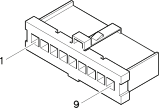

H5A Steering column switch unit ( FRONT )
- Path
- Electrical equipment > Connectors > H Manual electric controls > H5 Steering column switch unit > H5A Steering column switch unit ( FRONT )
- Kind
- connector pinout (pin -> wire colour -> other end)
- Applies to
- engines: 1.6 TS , 1.8 TS, 2.0 JTS, 2.5 V6, 3.2 V6, 1.9 JTD 8v , 1.9 JTD 16v, 2.0 JTS, 2.4 JTD 10v, 2.4 JTD 20v; production: fino a 03/98, da 04/98 a 02/99, da 03/99 a 01/00, da 02/00 a 01/01, da 02/01 a 02/02; only with equipment: Sedan
- Interactive page
- https://sloeber94.github.io/elrnDB-a156/en/#/3236099
Applies to: engines: 1.6 TS , 1.8 TS, 2.0 JTS, 2.5 V6, 3.2 V6, 1.9 JTD 8v , 1.9 JTD 16v, 2.0 JTS, 2.4 JTD 10v, 2.4 JTD 20v; production: fino a 03/98, da 04/98 a 02/99, da 03/99 a 01/00, da 02/00 a 01/01, da 02/01 a 02/02; only with equipment: Sedan

Wiring | Colour |
|---|---|
BIANCO (white) |
Topics linked from this page (5)
- 12 FRONT
- C10A Front left earth ( FRONT )
- J50 Headlamp washer relay
- N15 Windscreen wiper motor
- N20 Windscreen washer pump motor
Topics that link to this page (27)
- 5550A12 complete stalk unit - r+r for versions with air bag
- C10A Front left earth ( FRONT )
- C10A Front left earth ( FRONT )
- C10A Front left earth ( FRONT )
- C10A Front left earth ( FRONT )
- C15 Facia earth, driver's side ( FRONT )
- C15 Facia earth, driver's side ( FRONT )
- C15 Facia earth, driver's side ( FRONT )
- D5 Front / ABS couping ( FRONT )
- D5 Front / ABS couping ( FRONT )
- D5 Front / ABS couping ( FRONT )
- D5 Front / ABS couping ( FRONT )
- D5 Front / ABS couping ( FRONT )
- D5 Front / ABS couping ( FRONT )
- D5 Front / ABS couping ( FRONT )
- D5 Front / ABS couping ( FRONT )
- D5 Front / ABS couping ( FRONT )
- D5 Front / ABS couping ( FRONT )
- D5 Front / ABS couping ( FRONT )
- D5 Front / ABS couping ( FRONT )
- D5 Front / ABS couping ( FRONT )
- J50 Headlamp washer relay ( FRONT )
- J50 Headlamp washer relay ( FRONT )
- M79 Windscreen wiper control unit ( FRONT )
- N15 Windscreen wiper motor ( FRONT )
- N20 Windscreen washer pump motor ( FRONT )
- N22 Electric windscreen / rearscreen washer pump motor ( FRONT )